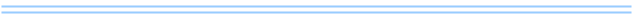

libFiles
Functions to manipulate directory and file names.
Overview
Functions to manipulate directory and file names.
Contains the following:
ksl::baseName()
ksl::dirName()
ksl::scriptName()
ksl::scriptDir()
ksl::suffix()
ksl::notSuffix()
Index
ksl::baseName
Strip leading directory components from filename.
Does not touch any suffixes.
Example
ksl::baseName /music/beatles/yellow-submarine.flak
Output: yellow-submarine.flak
Arguments
$1 (string): the filename
Exit codes
1: error, missing args
0: in all other cases
Output on stdout
the basename
Output on stderr
“baseName(): missing operand”

ksl::dirName
Strip last component from filename.
Example
ksl::dirName /music/beatles/yellow-submarine.flak
Output: /music/beatles
Arguments
$1 (string): the filename
Exit codes
1: error, missing args
0: in all other cases
Output on stdout
the dirname
Output on stderr
“dirName(): missing operand”
ksl::scriptDir
Returns the absolute path to the script itself.
Usage for this is primarily at script startup, for those occasions when a script needs to know the location of the script itself. This is just the dirname of $0.
Takes no args. Uses $0 from env.
Example
echo $(ksl::scriptDir)
Output on stdout
the path
ksl::scriptName
Returns the name of the script with suffix.
Usage for this is primarily at script startup, so that a script doesn’t need to hard code in its name. This is just the basename of $0.
Takes no args. Uses $0 from env.
Example
echo $(ksl::scriptName)
Output on stdout
the script name
ksl::suffix
Returns the file name suffix - the last ‘.’ and following characters.
This conforms to the Makefile $(suffix …) command.
Example
ksl::suffix /home/elvis/bin/power.bash
Output: .bash
Arguments
$1 (string): the filename
Output on stdout
the suffix
ksl::notSuffix
Returns the file name wiithout any suffix.
Example
ksl::suffix /home/elvis/bin/power.bash
Output: power
Arguments
$1 (string): the filename
Output on stdout
the filename